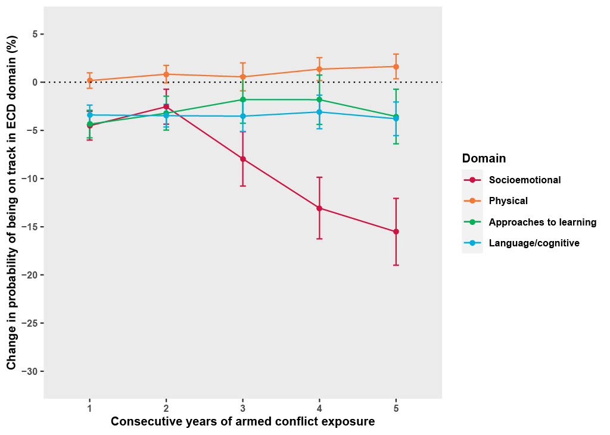
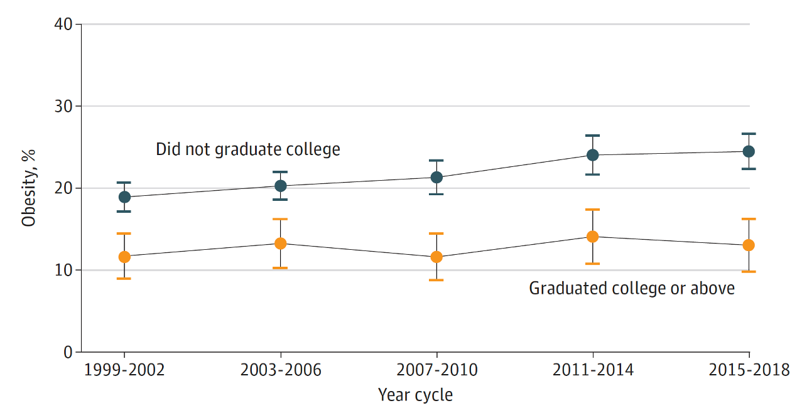
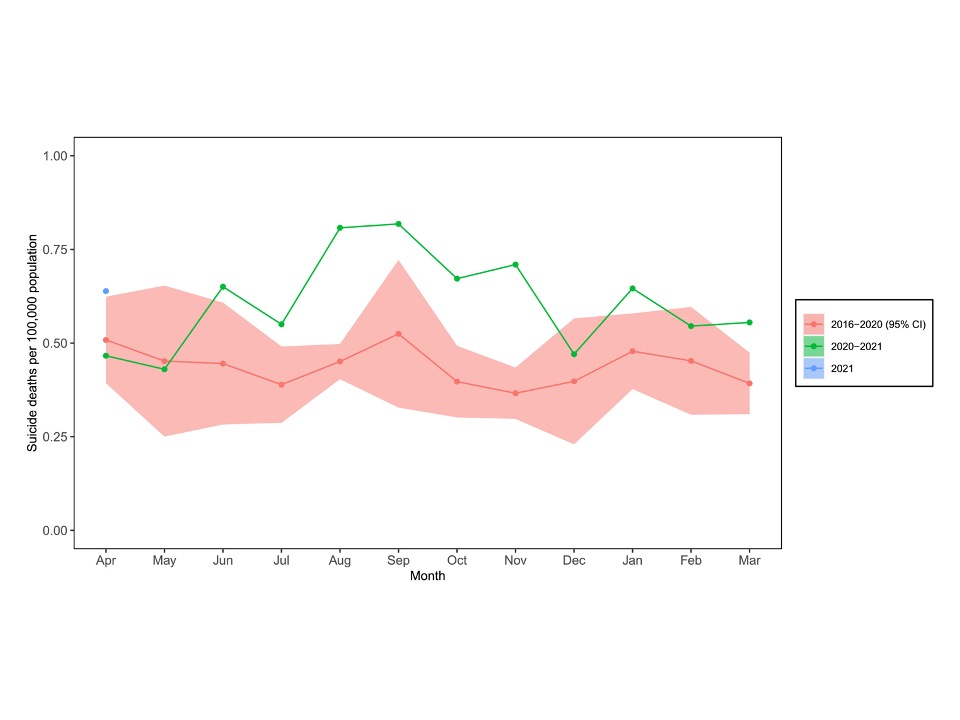
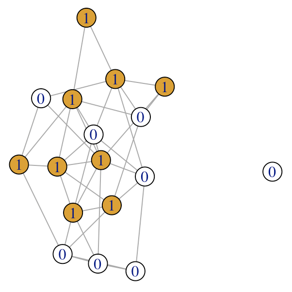

Ryunosuke Goto, MD（後藤 隆之介）
Pediatrician-scientist
I'm a Pediatrician at the University of Tokyo Hospital and Nagano Children's Hospital. After receiving primary and secondary education in the United Kingdom and the United States, I received my MD from the University of Tokyo in 2019.
I am interested in the mechanisms through which the environment shapes human development, behavior, and disease. My interests are based on my experience as a Pediatrician, where I have seen many children and adolescents with physical and mental health disorders and developmental disorders (autism spectrum disorder in particular), whose condition often changes drastically from alterations in their environment. My work has been published in The Lancet, JAMA Pediatrics, and Pediatrics, among other journals.
Research
My work focuses on how the social environment and adverse experiences affect human development, behavior, and disease. I have used epidemiological methods, machine learning, and social network analysis to explore these topics. In particular, I have done extensive research on factors such as war, socioeconomic status, and the COVID-19 pandemic, and how they affect human development and disease.

Armed Conflict and Early Childhood Development in 12 Low- and Middle-Income Countries. Ryunosuke Goto, et al. Pediatrics, 2021. We show that the development of children aged 3-4 years, especially socioemotional development, may be delayed as a consequence of war.

Trends in Obesity Among US Adolescents by Socioeconomic Status, 1999-2018. Ryunosuke Goto, et al. JAMA Pediatrics, 2022. We provide evidence that the socioeconomic gap in US adolescents' obesity may be widening over the past few decades.
 Reasons and trends in youth’s suicide rates during the COVID-19 pandemic. Ryunosuke Goto, et al. The Lancet Regional Health – Western Pacific, 2022. We show that suicide rates among youth in Japan may have increased during the COVID-19 pandemic.
War is a Public Health Emergency. Ryunosuke Goto, et al. The Lancet, 2022. In this Correspondence, we discuss the consequences of war on children, with a focus on the long-lasting effects on their development and mental health.
Machine Learning Detects Heterogeneous Effects of Medicaid on Depression: Oregon Health Insurance Experiment. Under review. We used the machine learning causal forest model to explore factors associated with heterogeneous effects of Medicaid coverage on decreasing depression risk.
 Using social network analysis for prevention of social isolation. In progress. Why and how do some indivuals in social network end up in isolation? We are using social network analysis to find out.
Selected Publications
Reasons and trends in youth’s suicide rates during the COVID-19 pandemic. Ryunosuke Goto, Yusuke Okubo, Norbert Skokauskas. The Lancet Regional Health – Western Pacific, 2022. [Paper]
Trends in Obesity Among US Adolescents by Socioeconomic Status, 1999-2018. Ryunosuke Goto, Roch Nianogo, Yusuke Okubo, Kosuke Inoue. JAMA Pediatrics, 2022. [Paper]
War is a Public Health Emergency. Ryunosuke Goto, Anthony P. S. Guerrero, Mario Speranza, Daniel Fung, Campbell Paul, Norbert Skokauskas. The Lancet, 2022. [Paper]
Armed Conflict and Early Childhood Development in 12 Low- and Middle-Income Countries. Ryunosuke Goto, Thomas Frodl, Norbert Skokauskas. Pediatrics, 2021. [Paper and video abstract]
The Gilles de la Tourette Syndrome-Quality of Life Scale (GTS-QOL): A Validation in Japanese Patients. Ryunosuke Goto, Natsumi Matsuda, Maiko Nonaka, Yu Hamamoto, Yosuke Eriguchi, Mayu Fujiwara, Akane Suzuki, Yukari Yokoyama, Yukiko Kano. Frontiers in psychiatry, 2021. [Paper]
Conference Presentations and Invited Talks
Social network analysis and network interventions in society, human development, and health research. Ryunosuke Goto, Akihiro Nishi. Invited talk, Eunice Kennedy Shriver National Institute of Child Health and Human Development (NICHD) Social and Behavioral Sciences Branch Seminar Series, 2022.
Armed Conflict and Early Childhood Development in 12 Low- and Middle-Income Countries. Ryunosuke Goto, Thomas Frodl, Norbert Skokauskas. Oral presentation, American Academy of Pediatrics (AAP) National Conference and Exhibition, 2021. [Paper and video abstract]
Effects of comorbid Tourette symptoms on distress by compulsive-like behavior in very young children. Ryunosuke Goto, Miyuki Fujio, Natsumi Matsuda, Mayu Fujiwara, Norbert Skokauskas, Yukiko Kano. Oral presentation, 24th World Congress of the International Association for Child and Adolescent Psychiatry and Allied Professions (IACAPAP), 2020. [Paper]
Dissemination and implementation of the e-MCH Handbook, the potential role of m-Health in improving health equity in a refugee setting: A cross-sectional study. Ryunosuke Goto, Seif Nasir, Akiko Kitamura, Majed Hababeh, Ghada Ballout, Junko Kiriya, Akihiro Seita, Masamine Jimba. Oral presentation, American Public Health Association (APHA) Annual Meeting, 2018. [Paper]